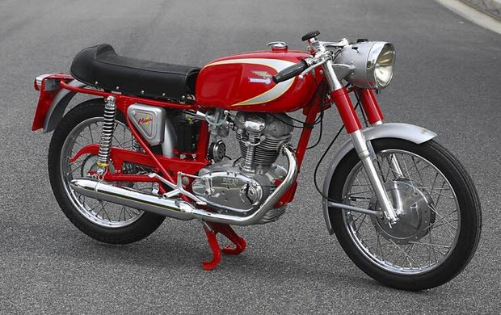

Мотоцикл
Ducati 100 Gran Sport (1955 год)
Компенсировать неудачу удалось наступлением на фронте маленьких моторов: почти сразу выходит 3-скоростной Cucciolo с двигателем объемом 55 куб. см. и 98-кубовый Cruiser. Эти мотоциклы первыми комплектовались хребтовой рамой, телескопической вилкой и задним маятником. Новый виток развития компании начинается в 1954 году, когда должность главного инженера занимает Фабио Тальони. Первой его работой стал 100-кубовый 100 Gran Sport, который определил направление движения Ducati на ближайшие 15 лет. Чтобы увеличить мощность мотора, Тальони наращивал его обороты. Распредвал он переместил в головку цилиндра. Привод осуществлялся через вертикальный вал и две пары конических шестерен. Это позволяло двигателю выдерживать до 11500 об./мин. Восьмидесятикилограммовый мотоцикл разгонялся до 130 км/час. Модель сразу же принесла команде Ducati победу в классе 100 куб. см. Для загрузки производства руководство решило наладить выпуск транспортных средств. Выбор пал на небольшие и недорогие веломоторчики, спроектированные Альдо Фаринелли и продающиеся под маркой Siata. Фирма инженера не могла справиться с растущим спросом, поэтому по предложению правительства Фаринелли продает лицензию на изготовление моторов Ducati, а сам возвращается к любимому делу — созданию и тюнингу спорткаров. Так, на свет начали появляться веломобили под названием Cucciolo, что в переводе означает «щенок». Они комплектовались 50-кубовым двигателем и выгодно отличались от конкурентов хорошей тягой на низких оборотах, что было удобно при гористом рельефе Италии.